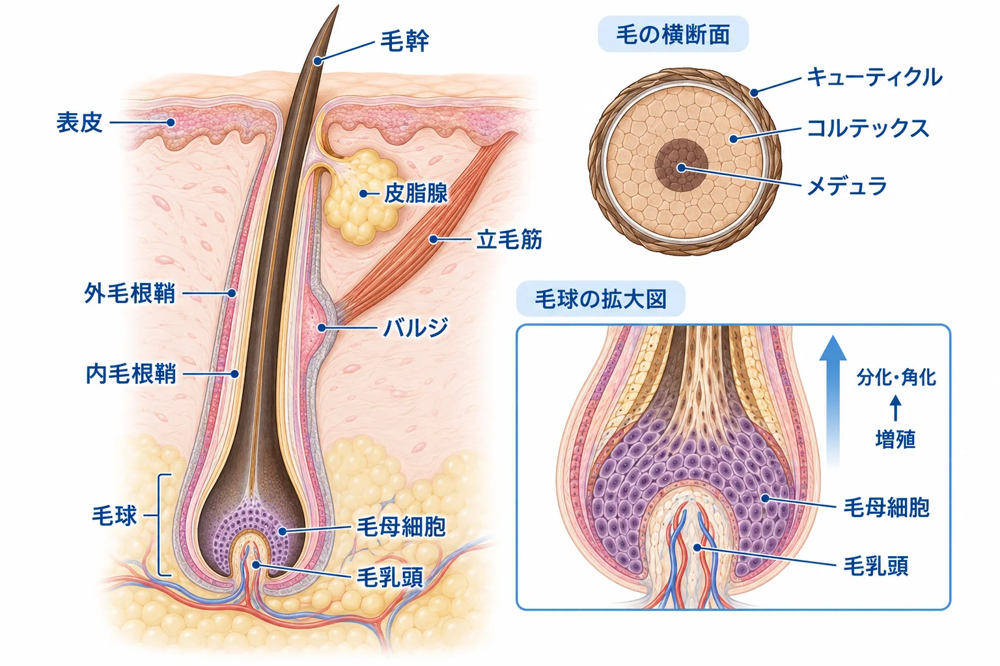
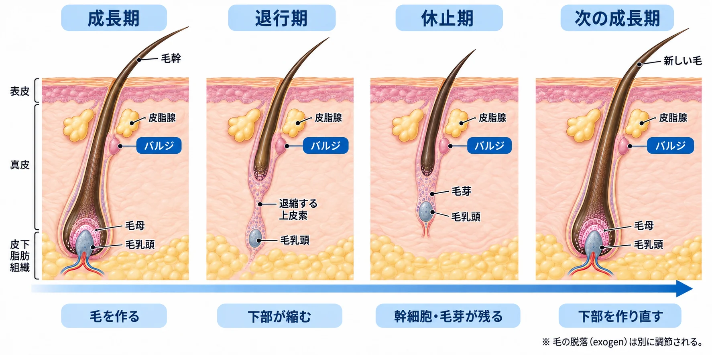
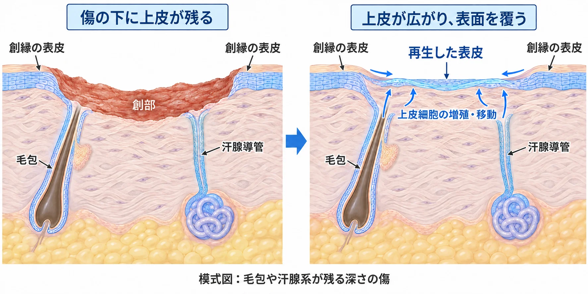

美容皮膚科 ／ 組織の生化学
毛と毛包毛を作る構造と、再生・修復を支える細胞
公開 2026-10-06
毛は、皮膚の中にある毛包で作られます。毛包には、毛を作る細胞、その細胞を補充する幹細胞、増殖や分化を調節する間葉系の細胞が集まっています。これらがやり取りすることで、毛は伸び、成長を止め、再び作られます。
毛包は、皮膚が傷ついたときに表皮を修復する細胞の供給源にもなります。発毛と創傷治癒を理解するために、まず毛そのものと、それを作る毛包の構造を見ていきます。
この章の一言
毛包は、毛を作り直す細胞を保ち、傷ついた表皮の修復にも関わる構造です。 毛周期は、その細胞たちが毛を作る活動を繰り返す過程です。
1 毛と、それを作る毛包
皮膚の表面に出ている毛の部分を毛幹、皮膚の中にある部分を毛根と呼びます。その毛根を取り囲み、毛を作る上皮性の構造が毛包です。毛包の周囲には、結合組織、血管、神経が分布します。毛包の上皮と、毛乳頭・結合組織性毛根鞘などの間葉系組織が、互いにシグナルを送り合って毛の形成を支えます。
成長中の毛包の最も深い部分は膨らんでおり、毛球と呼ばれます。毛球には、毛を作る毛母細胞と、その増殖・分化を調節する毛乳頭があります。

| 部位 | どこにあるか | 主な役割 |
|---|---|---|
| 毛母（毛母細胞の集団） | 毛球内で毛乳頭を取り囲む | 活発に分裂し、毛や内毛根鞘になる細胞を供給する |
| 毛乳頭 | 毛球の底部に入り込む結合組織 | 上皮細胞へシグナルを送り、毛の成長を調節する |
| 内毛根鞘 | 成長中の毛をすぐ外側から囲む | 作られる毛を支持し、形が整う過程に関わる |
| 外毛根鞘 | 内毛根鞘の外側から毛包を囲む | 表皮に連続する上皮で、幹細胞・前駆細胞を含む |
| 結合組織性毛根鞘（dermal sheath） | 毛包上皮の外側を包む間葉系の組織 | 毛乳頭とともに毛包の環境を構成し、毛周期に伴う形の変化にも関わる |
| バルジ | 皮脂腺の開口部より下、立毛筋が付着する付近の外毛根鞘 | 毛包を再生する上皮性幹細胞が存在する領域 |
毛包の上部には皮脂腺の導管が開き、皮脂が毛包を通って皮膚表面へ出ます。皮脂の形成と全分泌は皮脂分泌の生化学で扱います。
詳しく：毛包の上部と下部では、残り方が違う
皮膚表面から皮脂腺の導管が開く位置までを漏斗部、そこからバルジ付近までを峡部と呼びます。その下に、毛周期に応じて伸び縮みする下部があります。
上部は表皮や皮脂腺につながる構造を保ち、下部は成長期に発達して退行期に縮小します。バルジの幹細胞が保たれる位置と、毛母細胞が活発に毛を作る位置を分けると、毛周期に伴う形の変化が理解しやすくなります。
軟毛と硬毛、部位による違い
細く短く、色素の少ない毛を軟毛（vellus hair）、太く色素の多い毛を硬毛（terminal hair）と呼びます。頭髪やひげに加え、眉毛・まつ毛も硬毛に含まれます。毛包の大きさや深さも、作る毛の種類によって異なります。Vogtら, Exp Dermatol., 2007
毛が伸びる長さには、太さだけでなく、成長を続ける期間が関わります。頭髪、眉毛、まつ毛では成長期の長さが異なり、それぞれの部位に合った長さの毛になります。
2 細胞が分裂し、角化して毛になる
毛母細胞が分裂して生まれた細胞は、上方へ移動しながら分化します。毛になる細胞はケラチンなどを蓄積し、核や細胞内の構造を失って、硬い線維状の構造になります。毛が伸びるのは、根元で新しい細胞が作られ、毛へと変わるためです。
毛の最外層は、鱗状の細胞が重なる毛小皮（キューティクル）です。その内側の毛皮質（コルテックス）が毛の大部分を占め、強さや色に関わります。中心には毛髄質（メデュラ）がある場合もあります。
ケラチンが束になり、架橋されて強さを持つ
毛の強さには、毛ケラチンの線維と、その周囲にあるケラチン関連タンパク質（KAP）が関わります。毛皮質では、ケラチンの細い線維が長軸方向に束を作り、KAPとともに密な構造を形成します。
システイン残基どうしが作るジスルフィド結合（S–S結合）は、このタンパク質の構造を安定させます。毛の手触りや切れにくさは、作られた線維の配列、結合、表面のキューティクルの状態によって変わります。ヒト毛髪の力学特性を調べた研究, 2022
皮膚から出た毛は、角化した細胞からなる構造です。生きた細胞のように、傷んだ部分を新しいタンパク質へ置き換える働きは持ちません。
毛を作る細胞と、色を作る細胞
毛球のメラノサイトは、毛になる細胞へメラニンを渡します。毛の形成と色素の供給が組み合わさって、色のついた毛が作られます。メラニンの合成はメラノサイトと色素形成で扱います。
毛包には、毛を構成する上皮細胞の幹細胞とは別に、メラノサイト幹細胞も存在します。毛の形を作る細胞と色素を供給する細胞は、成長期に合わせて働きます。白髪では、毛の形成が続いていても、十分な色素が供給されなくなります。
詳しく：白髪とメラノサイト幹細胞
毛の色を保つには、成長期ごとに色素を作るメラノサイトを補う必要があります。メラノサイト幹細胞の維持と白髪の関係は、マウスとヒト毛包を調べた研究で示されています。Nishimuraら, 2005
マウスの休止期毛包では、メラノサイト幹細胞はバルジと、その下にある毛芽（次の毛の形成を始める細胞集団）に存在し、多くは毛芽に見られます。細胞追跡では、毛周期に合わせて場所を移り、分化が進んだ状態から未分化な状態へ戻ることも示されました。移動先で受けるWntなどのシグナルが、この変化に関わります。
加齢したマウスでは、バルジにとどまり、毛芽へ戻らない細胞が増えました。こうした細胞は色素を作るメラノサイトの供給に参加しにくくなります。幹細胞が残っていることに加え、必要な場所へ移り、分化できることが毛の色を保つうえで重要です。Sunら, 2023
3 バルジに細胞を残し、毛を作り直す
毛母細胞は、成長中に毛を作る細胞を大量に供給します。一方、バルジには、繰り返し毛包を再生するための幹細胞が保たれています。今の毛を作る毛母と、次の毛を作る細胞を供給するバルジは、場所も役割も異なります。
ヒトの毛包でも、バルジから増殖能力の高い細胞を分離した研究があり、幹細胞に富む領域としての性質が調べられています。Ohyamaら, 2006
幹細胞から生まれた細胞の一部は、増殖を繰り返して数を増やし、毛母などの細胞集団を作ります。こうした増幅の段階を経て、毛や内毛根鞘へ分化する細胞を大量に供給できます。
幹細胞の性質は、その細胞が接する基底膜、周囲の細胞、受け取るシグナルによって保たれています。この局所環境を幹細胞ニッチと呼びます。毛包では、細胞を長く残す仕組みと、必要な時期に増殖・分化させる仕組みが組み合わさっています。
毛乳頭は、毛の形成を調節する間葉系の細胞集団
毛乳頭の細胞は、特殊化した線維芽細胞の性質を持ちます。周囲の上皮細胞へシグナルを送り、毛包が毛を作る構造へ発達する過程を調節します。血管から材料や酸素が届くことに加えて、毛乳頭と上皮細胞のやり取りが毛の形成に必要です。
詳しく：毛乳頭細胞は、培養の仕方で毛を作らせる能力が変わる
ヒト毛乳頭細胞を平面上で増やすと、元の毛乳頭に特徴的な遺伝子発現が失われ、毛包の形成を誘導する能力が低下します。細胞を立体的な塊にして培養すると、その性質の一部が回復しました。
この細胞塊を使い、免疫不全マウスへ移植したヒト皮膚内で新しい毛包の形成を誘導した研究があります。細胞の種類に加えて、立体配置や周囲との接触が機能を左右することを示す実験です。Higginsら, 2013
休止期には、バルジの下、毛乳頭に接する位置に二次毛芽（secondary hair germ）という小さな上皮細胞集団があります。毛芽とバルジの細胞が、毛乳頭などからのシグナルに応答し、毛包の下部を再形成します。
詳しく：毛乳頭と幹細胞の間にある「毛芽」
マウスの研究では、成長期の開始時に毛芽の細胞がバルジの細胞より先に増殖し、毛包の再形成を始めることが示されています。毛乳頭、毛芽、バルジが時間差をもって応答することで、新しい成長期へ移ります。Grecoら, 2009
増殖を始めるシグナルと、静止を保つシグナル
毛包の再生は、周囲のシグナルによって始まる時期が調節されています。Wnt/β-cateninは毛の形成や成長期への移行に関わり、BMP（骨形成タンパク質）は幹細胞が静止した状態を保つ調節に関わります。作用は細胞の種類や毛周期の段階で変わります。
詳しく：Wnt・BMP・SHHは、どの段階で働くか
マウスでは、周囲の真皮でBMPシグナルが強い時期には、毛包が成長期へ入りにくくなります。BMPの作用が弱まると、再生を始める刺激へ応答しやすくなります。休止期にも、再生を始めやすい時期と始めにくい時期があります。Plikusら, 2008
再生が始まると、増殖中の毛母前駆細胞などからSHH（Sonic Hedgehog）が分泌され、バルジの幹細胞の増殖や、毛乳頭の応答に関わります。幹細胞から生まれた細胞も、幹細胞と周囲の環境へシグナルを返しています。Hsuら, 2014
これらは主にマウスで解析された機序です。各シグナルの働く場所と時期を踏まえて、毛包全体の再生を捉える必要があります。
4 毛周期は、毛包の下部を作り直す過程
毛包は、毛を作る成長期、下部が縮小する退行期、次の成長に備える休止期を繰り返します。これが毛周期です。

| 時期 | 毛包で起きること | 毛との関係 |
|---|---|---|
| 成長期（anagen） | 毛包の下部が発達し、毛母細胞が活発に増殖する | 毛が作られ、伸びる |
| 退行期（catagen） | 下部の上皮細胞にアポトーシスが起こり、毛包が縮小する | 毛の形成が止まる |
| 休止期（telogen） | 短くなった毛包に幹細胞や毛芽が保たれる | 古い毛が保持され、次の成長期への移行を待つ |
頭髪の成長期は約2〜6年、休止期は約3か月が目安です。毛包ごとに周期の段階がずれているため、通常は一斉に毛が抜けず、毛量が保たれます。期間には部位差・個人差があり、女性29人のまつ毛を調べた研究では、成長期は平均約1か月でした。Martínez-Velascoら, Dermatol Ther (Heidelb)., 2017、Thibautら, Br J Dermatol., 2010
毛が抜ける過程は脱毛期（exogen）として区別されます。古い毛の脱落と、新しい毛の形成は、それぞれ調節されています。
退行期に縮小するのは主に毛包の下部です。上部の構造と幹細胞を残すことで、次の成長期に毛を作る部分を再形成できます。発毛を考えるときには、細胞が残っているか、その細胞が活動を始められるか、作られる毛がどの程度成長するかを見ます。
詳しく：退行期には、毛乳頭も位置を変える
ヒト毛包では、退行期に毛球周囲などの上皮細胞でアポトーシスが増えることが確認されています。ヒト毛包の研究
マウスでは、毛包を外側から包む結合組織性毛根鞘（dermal sheath）の収縮が、毛乳頭を上方へ移動させることに関わります。毛包が短くなると、毛乳頭が再び毛芽の近くに位置し、次の再生につながる配置になります。細胞死と組織の収縮が協調して、毛包の形を変えています。Heitmanら, 2020
5 毛が抜けることと、細くなること
見た目の毛量には、毛の本数、一本の太さ、伸びる長さが関わります。成長期が短くなると長い毛に育ちにくくなり、毛包が小さくなると細い毛が作られるようになります。毛が抜ける変化と、作られる毛が細くなる変化を分けると、毛包のどの働きが変わったかを整理できます。
| 変化 | 毛包で起きていること | 見た目へのつながり |
|---|---|---|
| 休止期へ移る毛包が増える | 成長を終える毛包の割合が増え、その後に毛が脱落する | きっかけから時間をおいて抜け毛が増えることがある |
| 毛包がミニチュア化する | 毛包と毛母の規模が小さくなり、細く短い毛を作るようになる | 毛が残っていても、地肌が見えやすくなる |
| 幹細胞を保つ領域まで傷つく | 再生に必要な細胞と環境が失われ、瘢痕に置き換わることがある | 毛の再生が難しくなる |
詳しく：成長中の毛球を免疫反応から守る仕組み
成長期の毛球には、免疫細胞に認識されにくい局所環境があります。これを免疫特権（immune privilege）と呼びます。ヒト毛包では、毛球の一部で抗原を提示するMHCクラスI分子の発現が低く保たれる一方、上部には免疫細胞が分布します。Christophら, Br J Dermatol., 2000
培養したヒト毛包に炎症性サイトカインIFN-γを加えると、毛球のMHCクラスIなどの発現が増えました。この保護的な環境の変化は、円形脱毛症で毛包が免疫反応の標的になる仕組みの一つとして研究されています。Itoら, Am J Pathol., 2004
AGAでは、毛乳頭の応答と細胞の供給が変わる
男性型脱毛症（AGA）では、アンドロゲンへの応答に伴って、感受性のある部位の毛包がミニチュア化します。ヒトの培養毛乳頭細胞では、アンドロゲンの一種であるDHT（ジヒドロテストステロン）によってWntシグナルを抑えるDKK1の産生が増え、毛包の上皮細胞の増殖抑制やアポトーシスに関わることが報告されています。ホルモンを受け取った毛乳頭が、隣の上皮細胞へ及ぼす作用を変える例です。Kwackら, 2008
詳しく：幹細胞が残っていても、十分な毛を作れないことがある
AGA患者の薄毛部と非薄毛部を比較した研究では、薄毛部にもKRT15を高発現する幹細胞集団が保たれる一方、CD200を高発現する細胞やCD34陽性の前駆細胞集団が減っていました。
この結果は、幹細胞が存在することに加えて、そこから毛を作る細胞集団へ進む過程が重要であることを示唆します。研究者は、幹細胞から前駆細胞への移行の障害を、AGAに関わる可能性として提案しています。Garzaら, 2011
詳しく：加齢した毛包とXVII型コラーゲン
毛包の幹細胞には、基底膜への接着に関わる膜貫通型タンパク質XVII型コラーゲン（COL17A1）があります。真皮で太い線維を作るI型・III型とは異なり、細胞の接着構造を構成するコラーゲンです。
マウスの細胞追跡では、DNA損傷応答に伴うCOL17A1の分解が、幹細胞の性質の喪失と表皮方向への分化につながり、毛包の縮小に関わる機序が示されました。ヒトの加齢毛包でも関連する変化が調べられています。毛包の維持には、幹細胞そのものと、接着を含むニッチの維持が関わります。Matsumuraら, 2016
6 毛包は、傷ついた表皮の修復にも関わる
皮膚の表面が傷つくと、創の周囲の表皮や、創の下に残った毛包などから上皮細胞が増殖・移動し、傷の表面を覆います。これを再上皮化と呼びます。

毛包は皮膚の深部まで続いているため、表面が傷ついても、その一部が残ることがあります。残った上皮が細胞の供給源になることが、毛包と創傷治癒のつながりです。炎症や真皮の修復を含む全体の流れは炎症と創傷治癒で扱います。
詳しく：バルジの研究と、ヒトの創傷で確認されたこと
マウスで細胞の由来を追った研究では、バルジ由来の細胞が傷ついた表皮へ移動し、修復に参加しました。この研究では、その多くは修復した表皮に長期間とどまらず、主に初期の修復へ寄与しました。Itoら, 2005
ヒト前腕の部分層創傷を調べた研究では、毛包脂腺系とエクリン汗腺系の両方から上皮が広がり、新しい表皮を作る様子が確認されています。ヒトでは、毛包に加えて汗腺系も重要な細胞の供給源です。Rittiéら, 2013
細胞の供給源は、傷の深さと、どの構造が残っているかによって変わります。マウスで示されたバルジ細胞の動きと、ヒトで確認された付属器からの再上皮化は、研究対象を明記して捉えます。
表面を覆う修復と、毛包そのものを作る再生
再上皮化では、毛包などから供給された細胞が、創面を覆う表皮を作ります。新しい毛包を作るには、さらに上皮と間葉系の細胞が配置を整え、毛乳頭や毛母、幹細胞を保つ領域まで形成する必要があります。
ヒトの深い傷が瘢痕として治る場合、表面が閉じても、毛包や汗腺などの付属器は十分に再建されないことがあります。傷を閉じることと、毛を作れる皮膚の構造まで取り戻すことには、必要な過程の違いがあります。
詳しく：傷の中で毛包が新しくできる研究
成体マウスの大きな全層創傷では、創の中央に毛包が新しく形成される現象が示されています。新生毛包は既存のバルジ幹細胞領域の外に由来する上皮細胞から生じ、Wntシグナルが必要でした。Itoら, 2007
これは、傷の環境で発生時に似た毛包形成が起こり得ることを示す研究です。ヒトで傷をつければ同じように毛包が再生するか、発毛治療として利用できるかは、別途検証が必要です。
この章の到達点
- 毛は角化した構造であり、毛包の中の細胞が増殖・分化することで作られる。
- 毛母は成長中の毛を作り、バルジの幹細胞や毛芽、毛乳頭は毛包の再生に関わる。
- 毛周期では、幹細胞を保ちながら毛包の下部が縮小・再形成される。
- 毛量は脱落だけでなく、毛包の規模や成長期の長さによっても変わる。幹細胞とその環境を保ち、毛を作る細胞を供給する過程が重要になる。
- 傷の下に残る毛包や汗腺系は再上皮化に参加する。表皮を修復する過程と、毛包そのものを新生する過程は異なる。
中核参考文献
- Ohyama M, et al. Characterization and isolation of stem cell-enriched human hair follicle bulge cells. J Clin Invest. 2006. PMID: 16395407.（ヒトのバルジ細胞の分離と性質）
- Greco V, et al. A Two-Step Mechanism for Stem Cell Activation during Hair Regeneration. Cell Stem Cell. 2009;4:155–169. PMID: 19200804. 全文.（マウスの毛芽とバルジの活性化）
- Ito M, et al. Stem cells in the hair follicle bulge contribute to wound repair but not to homeostasis of the epidermis. Nat Med. 2005;11:1351–1354. PMID: 16288281. DOI: 10.1038/nm1328.
- Rittié L, et al. Eccrine sweat glands are major contributors to reepithelialization of human wounds. Am J Pathol. 2013;182:163–171. PMID: 23159944. DOI: 10.1016/j.ajpath.2012.09.019.
- Higgins CA, et al. Microenvironmental reprogramming by three-dimensional culture enables dermal papilla cells to induce de novo human hair-follicle growth. Proc Natl Acad Sci USA. 2013;110:19679–19688. DOI: 10.1073/pnas.1309970110.
- Plikus MV, et al. Cyclic dermal BMP signalling regulates stem cell activation during hair regeneration. Nature. 2008;451:340–344. PMID: 18202659. DOI: 10.1038/nature06457.
- Hsu YC, Li L, Fuchs E. Transit-amplifying cells orchestrate stem cell activity and tissue regeneration. Cell. 2014. PMID: 24813615. DOI: 10.1016/j.cell.2014.02.057.
- Heitman N, et al. Dermal sheath contraction powers stem cell niche relocation during hair cycle regression. Science. 2020;367:161–166. PMID: 31857493. DOI: 10.1126/science.aax9131.
- Kwack MH, et al. Dihydrotestosterone-inducible dickkopf 1 from balding dermal papilla cells causes apoptosis in follicular keratinocytes. J Invest Dermatol. 2008. PMID: 17657240.
- Garza LA, et al. Bald scalp in men with androgenetic alopecia retains hair follicle stem cells but lacks CD200-rich and CD34-positive hair follicle progenitor cells. J Clin Invest. 2011;121:613–622. DOI: 10.1172/JCI44478.
- Matsumura H, et al. Hair follicle aging is driven by transepidermal elimination of stem cells via COL17A1 proteolysis. Science. 2016. PMID: 26912707.
- Nishimura EK, et al. Mechanisms of hair graying: incomplete melanocyte stem cell maintenance in the niche. Science. 2005;307:720–724. PMID: 15618488.
- Sun Q, et al. Dedifferentiation maintains melanocyte stem cells in a dynamic niche. Nature. 2023;616:774–782. DOI: 10.1038/s41586-023-05960-6.
- Ito M, et al. Wnt-dependent de novo hair follicle regeneration in adult mouse skin after wounding. Nature. 2007;447:316–320. PMID: 17507982. DOI: 10.1038/nature05766.